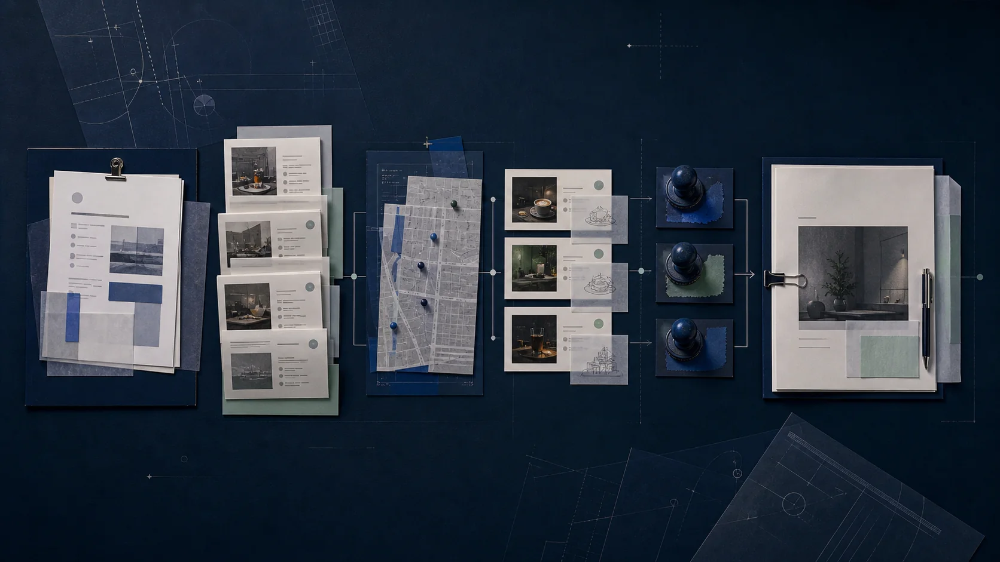

Brief → evidence → validation → review
01 · WEIN / AGENTIC OPERATIONS
Agentic Offer Pipeline
AI Product Engineer · Product ownership
Offer creation depended on repeated manual handoffs from advisor input through intelligence, concepts, scoring, creation, and review. Context could drift, duplicate concepts could reappear, and factual mistakes could reach reviewers.
I designed one orchestrated engine where creative agents research, generate, and score directions while deterministic gates verify merchant grounding, similarity, and geographic context.
WORKFLOW
Advisor → Intel → Concepts → Score → Create → Review
OUTPUTGrounded, review-ready offer
n8n · LLMs · Python · RAG · pgvector